TeleBall
Build your own Arduino retro handheld game console
This project is maintained by sy2002
TeleBall Electronics
Schematics

- BAT+ / BAT-: Battery+ and Battery- aka GND, directly wired via battery clips
- +UB: 6 V battery power (coming from BAT+) but after the on/off switch
-
+3V3: 3.3 V regulated by IC2 VREG3, needed by the radio SV1
- MODUL1 ARDUINO: Microcontroller - see details below
- KWM-R30881CBB: 8x8 LED Display - see details below
- IC1 MAX7221CNG: LED Display Driver - see details below
- SV1: nRF24L01+ Radio - see details below
-
IC2 VREG3: Voltage Regulator - see details below
- SCHALTER: TeleBall power switch / on/off switch
- LED1, LED2, LED3: ball / score indicator LEDs
- BUTTON+ / BUTTON-: Reverse logic button +/-, i.e. not pressed = current flowing
- LS+ / LS-: Speaker +/-
- POTI+, POTI-, POTI_S: 10kΩ potentiometer’s +, - and signal line
- C2: 10 µF current buffer (capacitor) for MAX7221
- C1, C3, C4: 100 nF anti-oscillation capacitors
- R2: 24.9 kΩ voltage and current selector resistor for MAX7221
-
R5, R6, R7: 8.2 kΩ series resistor for LEDs
- MOSI, MISO, SCK, IRQ, CSN, CE: Wiring that connects the Arduino with the Radio
- DATAIN, CLOCK, LOAD: Wiring that connects the Arduino with the LED Display Driver
- DIGx (x = 0 .. 7), SEGy (y = A .. G, DP): Wiring that connects the LED Display Driver with the 8x8 LED Display.
Download TeleBall’s detailed Schematics PDF. The subfolder
eagle of your TeleBall package contains all schematics including the PCB design. We
used the Freeware version of the specialized CAD software Eagle
to create the schematics and the board layout (PCB design).
The Circuit Explained
The following parts are the main parts of the circuit:
- Microcontroller: 5V version of Arduino Nano 3.0 or compatible device (Data Sheet)
- 8x8 LED Display: KWM-R30881CBB aka AdaFruit 1817 (Data Sheet)
- LED Display Driver: MAX7221 (Data Sheet)
- Radio: nRF24L01+ on an Arduino friendly breakout board (Data Sheet)
- Voltage Regulator: Rohm BD33KA5FP-E2 (Data Sheet)
Some basics about how these main parts work together:
-
The Arduino is the heart of TeleBall. Using its Harvard architecture, we are able to store the program code itself on (32kB Flash) as well as configuration data (1kB EEPROM). Additionally, it features SRAM (2kB). The built-in USB port in conjunction with Arduino’s bootloader allows us to update TeleBall’s firmware easily. The Arduino has a built-in current regulation, so we can directly connect it to UB+.
-
As each pin of the Arduino is able to supply 40mA, the Arduino can directly drive the three status LEDs and the speaker. Pin D9 is a PWM (Pulse-width modulation) capable pin; this is important to generate tones via software.
-
The 8x8 LED matrix has 64 LEDs but only 16 pins. That means, that you need to scan through the matrix (either line by line or column by column) very quickly to control it pixelwise. The MAX7221 is doing this automatically, so the Arduino just needs to transmit the desired pattern. This is done using the digital output pins D2, D3 and D4, that communicate via the SPI protocol with the MAX7221 display driver.
-
The Led Matrix Driver MAX7221 is not only controlling the 8x8 LED matrix but also driving it by supplying voltage and current for the actual operation of the LEDs. The MAX7221 allows up to 6V voltage at its VCC pin. We are therefore directly connecting it to the battery current UB+, which is initially - as long as the batteries are new/full - indeed 6V but dropping during the lifetime of the batteries.
-
The wiring of the MAX7221 to the 8x8 LED matrix might look a bit weird: This is mainly because of the inner workings of the LED matrix, that is internally not wired linearly. For example, as described in the Data Sheet, LED row #1 is mapped to pin #9 and LED column #2 to pin #3. The MAX7221 is supplying current at SEG DP, SEG A .. SEG G and sinking current from the display’s common cathode at DIG 0 .. DIG 7.
-
The radio is able to cope with 5V control lines, i.e. Arduino’s digital outputs MOSI, MISO, SCK, IRQ, CSN, CE but it cannot be driven by 5V. This is why we use the Rohm voltage regulator that converts the up to 6V UB+ to a stable 3.3V. The names of the signal lines MOSI/MISO/etc. might be misleading a bit: The whole radio SPI control is done in software, we are not using any hardware SPI features and therefore we could have wired the radio differently, when it comes to digital ports at the Arduino.
-
We used high intensity LEDs, this is why the series resistors R5, R6, R7 are having such high Ohm values. If you plan to use normal / weaker LEDs, then you could use 1kΩ resistors instead.
-
The software activates the internal pull-up resistor of the digital input D8 and uses an inverse logic. Therefore it expects a button that also uses reverse / inverse logic, i.e. no current when pressed and current when not pressed.
-
TeleBall’s main game control, the “paddle” or “knob”, is implemented using a 10kΩ potentiometer that connects with the Arduino’s 10bit-A/D analog input A7. (Note, that TeleBall’s firmware configures the other Ax analog pins, particularly A0, A1 and A2 as digital outputs.)
Important Files
All files related to TeleBall’s electronics are Eagle
files, so you find them in the eagle folder.
BreakOut-8x8-rev2.sch Eagle schematics file. The above-mentioned
schematics are contained here.
BreakOut-8x8-rev2.brd Eagle PCB layout file. The below-mentioned
board layouts are contained here.
libraries.zip As the .sch and .brd files are self-contained,
you only need the Eagle libraries from the ZIP,
if you want to dig deeper, e.g. modify details
of parts.
Custom Printed Circuit Board (PCB)
To get a custom PCB you just need to send the file BreakOut-8x8-rev2.brd from the
eagle folder of the TeleBall package to the online PCB manufacturer of your choice.
The .brd file contains the multiple layers of which your PCB is consisting of:
{kind=link}
And this is how the result, i.e. the custom manufactured PCB should basically look like:
 & Bottom (right)")
The left side shows the top side of the PCB, the gap at the top right is for the red button, the so called Universal Button (reset, configuration, confirmation, etc). Download the high-resolution version of the PCB Photo.
Assembly Diagram
{kind=link}
{kind=link}
{kind=link}
Download high-resolution versions of the assembly diagrams: Top Layer Photo and Bottom Layer Photo
Some Hints for Assembling and Soldering TeleBall
-
You might want to print out the above-mentioned high-resolution versions of the graphical assembly diagrams. Additionally, the high-resolution PDFs of the board schematics might be useful, too: Top Layer Schematics and Bottom Layer Schematics
-
How to solder the SMD parts (like the capacitors Cx or the resistors Rx): Tin-coat one pad; while the tin-solder is still liquid, use a pair of tweezers to place the SMD part; as the tin-solder cools down, the SMD part starts to sit firm; now heat the second pad and let the tin-solder flow below the SMD part; let it cool down again; done.
-
Solder all SMD parts (top and bottom side of the PCB) first, including the voltage regulator (IC2 VREG3). Then go on with MAX7221 (IC1). Then do the on/off switch (SCHALTER) and after that the LEDs and the cables for the speaker (LS+ and LS-) as well as the cables for the potentiometer. Only then, solder the Arduino (MODUL1 ARDUINO) and the radio breakout board (SV1). The reason for this suggested soldering order is, that some of the larger parts like the Arduino and the radio breakout board are hiding some of the smaller parts and some of the cables.
-
You need to cut the legs of the ICs after you soldered them. Cut the Arduino Nano “head” pins before soldering it (they would interfere with the speaker if not cut).
-
Before you marry the PCB and the case as described in the next bullet point, be sure that you added the battery clips before (see next section).
-
The 8x8 LED matrix is the last part of TeleBall that you solder: Insert it through the case’s front side (there are dedicated holes for that) while holding the PCB against the inside of the case. While doing so, you are basically filtering in the 8x8 LED matrix through the case as well as through the PCB and therefore, this action “glues” both elements together.
-
Be mindful about the length of the cables. We advise to use red cables for +, black cables for - and other colors for signal cables. Additionally, we recommend to strip the insulaton at the cable ends and to tin-coat them.
Battery Clips
The case as well as the lid feature special places where the battery clips / battery springs need to be added. As shown in the image below, there are two kinds of battery clips: Flat clips and clips with springs. We bought just one variant - with springs - and created the other kind by cutting off the spring.There is a different treatment of the battery clips in the case versus the battery clips in the lid:
-
Case: If you look at the back side of the case with the open facing side down and the side which will hold the on/off switch and the USB port facing up, then after inserting the battery clips on the top/right and top/left side, you should solder a red wire at the right clip. After the marriage of the PCB and the case, you would solder the red wire to the BAT+ pad on the PCB. Furtheron you should solder a black wire at the left clip and later, after the marriage, solder it to the BAT- pad. The top right clip is without a spring and the top left clip is with a spring.
-
Lid: As shown in the image below, insert two battery clips into the lid and connect both with a wire. Be mindful not to have two springs at the same side, i.e. if you followed the above-mentioned instructions about the springs, then you should place the clip with a spring in the lid just as shown in the image below.
{kind=link}
Bill of Materials
| Image | ID | Description | Where to get it |
| 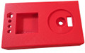 | Case | TeleBall Case and Lid | 3D print it (or have it 3D printed) as described in Case |
| 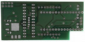 | PCB | Custom printed circuit board | Have it manufactured as described in this chapter. |
| 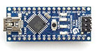 | MODUL1 ARDUINO | Arduino Nano or compatible device | Original Arduino Device or search for “arduino 3.0 nano 5v” on eBay to find compatible devices / clones |
| 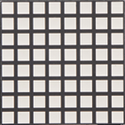 | KWM- R30881CBB | The Adafruit KWM-R30881CBB is a 30x30mm blue 8x8 LED matrix display featuring row cathodes. | Visit the Adafruit store and find part #1817. Seems to be Adafruit exclusive, as we did not yet find alternative vendors for this device, yet. |
| 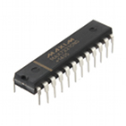 | IC1 | The MAX7221CNG is the display driver of the TeleBall. | Standard / Farnell 1593381 |
| 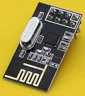 | SV1 | NRF24L01+ 2.4GHz Antenna Wireless Transceiver Module for Arduino on a breakout board | There are plenty of vendors on ebay selling this. Search for NRF24L01+ Arduino on eBay; we used this one. |
| 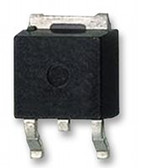 | IC2 VREG3 | Rohm voltage regulator part number BD33KA5FP-E2. | Standard / Farnell 2342845 |
| 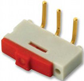 | SCHALTER | EAO 09.10201.02 switch with pins bent at right-angles | Standard / Farnell 1608081 |
| 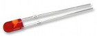 | LED1, LED2, LED3 | MULTICOMP 5mm Round LED Lamp, 20 mA. You need 3 of them per TeleBall. | Standard / Farnell 2112111 |
| 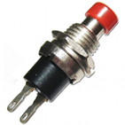 | BUTTON | Focan Electronic PBS-10C-2 Reverse-logic button by. If you need to find an alternative, use the datasheet to get the exact specs. | Not that easy to find. We got it from eBay.de (.de not .com); it is also available on alibaba.com; googling PBS-10C might also help. Amazon.com has similar buttons on stock if you search for “pbs push button”. |
| 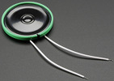 | LS | Thin Speaker, 39.6mm diameter, 4.5mm height, 8 Ω impedance, 0.25 W | Sparkfun part COM-10722 or Adafruit part #1891 |
| 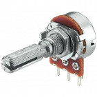 | POTI | Monacor VRB-141M10 10 kΩ linear mono potentiometer, 6mm shaft diameter, 25mm shaft length + 9,5mm body. If you need to find an alternative, use the datasheet to get the exact specs. | Monacor UK shop article VRB-141M10, click on “Find Your Retailer” on the right sidebar. Alternately google for “Monacor VRB-141M10 10k linear mono potentiometer”. |
| 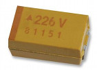 | C2 | 10 µF Tantal SMD capacitor 805 package | Standard / Farnell 197270 |
| 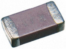 | C1, C3, C4 | 100 nF SMD capacitor 805 package. You need 3 of them per TeleBall. | Standard / Farnell 644160 |
 |
R2 | 24.9 kΩ SMD resistor 805 package | Standard / Farnell 2057643 |
 |
R5, R6, R7 | 8.2 kΩ SMD resistor 805 package. You need 3 of them per TeleBall. | Standard / Farnell 1887306 |
| 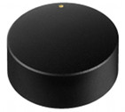 | Knob | Black aluminum rotary knob, 40mm diameter for 6mm shaft | Not easy to find. We found ours on ebay.de (.de not .com). Google for Black aluminum rotary knob, 40mm diameter for 6mm shaft, sometimes vendors call it a “Volume Control Potentiometer Knob”. |
| 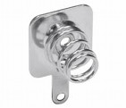 | Battery Clip | KEYSTONE BK5201 Battery Clip, 11.2x12.0 mm, 0.8 mm height of the foot, 10.5mm height including spring. You need 4 of them per TeleBall. Get the specs here if you need to find an alternative. | Not easy to find. Google for KEYSTONE BK5201 or KEYSTONE BK5201 Battery Holder or similar combinations. |
{kind=link}
Some hints about “Where to get it”:
-
As the world of electronics is very fast paced, it might be that some of the sources mentioned here will not be active any more when you visit this page. Please inform us via email: sy2002 at teleball.org, if you discover that.
-
The term “Standard / Farnell:
" means: This is a pretty standard part; you should get it "everywhere", i.e. enter the part name in google. Additionally we supply a Farnell part in this cases. Farnell is a very international distributor so it is very likely, that it is available in your country, too. Head to www.farnell.com and copy/paste the into Farnell's search bar. -
You can also use www.findchips.com to find vendors for the parts.
-
In general: If you cannot find a certain part at all, it might make sense to search for a similar alternative from another vendor. The drawback in this case might be, that the case might need some small adjustments.